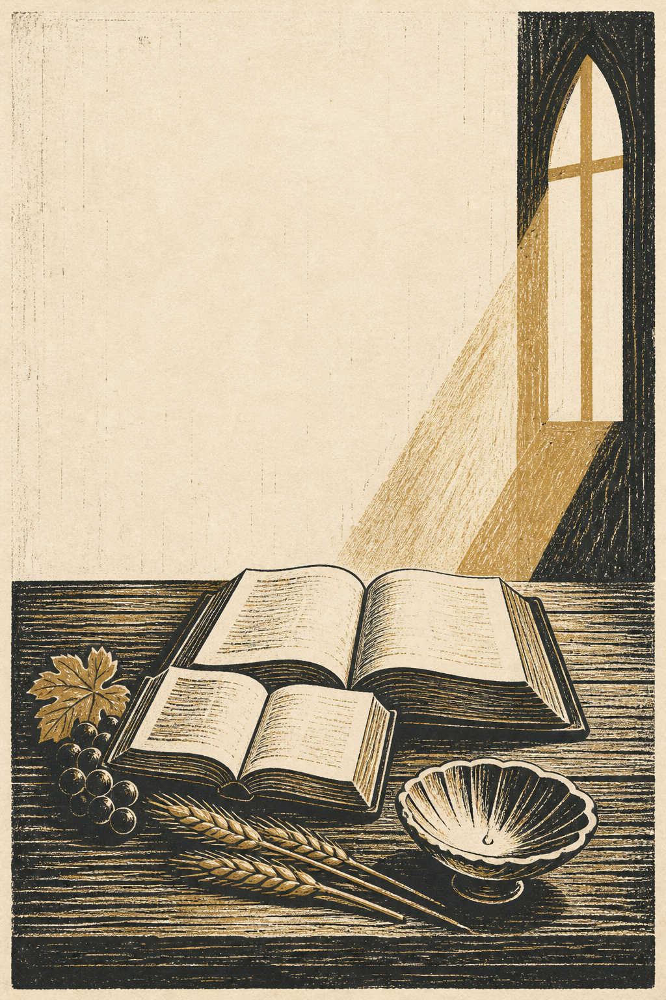

<!doctype html><html lang="en"><meta charset="utf-8"><meta name="viewport" content="width=device-width"><link rel="stylesheet" href="style.css"><title>Open Catechism</title><main><h1>Open Catechism</h1><p>Svebilius/Laine Edition</p><ol><li><a href="unit-01.html">Unit 1</a></li><li><a href="unit-02.html">Unit 2</a></li><li><a href="unit-03.html">Unit 3</a></li><li><a href="unit-04.html">Unit 4</a></li><li><a href="unit-05.html">Unit 5</a></li><li><a href="unit-06.html">Unit 6</a></li><li><a href="unit-07.html">Unit 7</a></li><li><a href="unit-08.html">Unit 8</a></li><li><a href="unit-09.html">Unit 9</a></li><li><a href="unit-10.html">Unit 10</a></li><li><a href="unit-11.html">Unit 11</a></li><li><a href="unit-12.html">Unit 12</a></li><li><a href="unit-13.html">Unit 13</a></li><li><a href="unit-14.html">Unit 14</a></li><li><a href="unit-15.html">Unit 15</a></li><li><a href="unit-16.html">Unit 16</a></li><li><a href="unit-17.html">Unit 17</a></li><li><a href="unit-18.html">Unit 18</a></li><li><a href="unit-19.html">Unit 19</a></li><li><a href="unit-20.html">Unit 20</a></li><li><a href="unit-21.html">Unit 21</a></li><li><a href="unit-22.html">Unit 22</a></li><li><a href="unit-23.html">Unit 23</a></li><li><a href="unit-24.html">Unit 24</a></li><li><a href="unit-25.html">Unit 25</a></li><li><a href="unit-26.html">Unit 26</a></li><li><a href="unit-27.html">Unit 27</a></li><li><a href="unit-28.html">Unit 28</a></li><li><a href="unit-29.html">Unit 29</a></li><li><a href="unit-30.html">Unit 30</a></li><li><a href="unit-31.html">Unit 31</a></li><li><a href="unit-32.html">Unit 32</a></li><li><a href="unit-33.html">Unit 33</a></li><li><a href="unit-34.html">Unit 34</a></li><li><a href="unit-35.html">Unit 35</a></li></ol><p><a href="divine-name.html">Divine Name appendix</a></p></main></html>